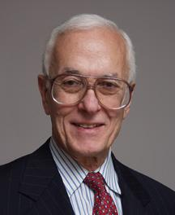

John Musa - Memorial
November 2009, ISSRE-20, Mysuru, India
It is with sadness that we bring you the news of John Musa passing away on April 24, 2009. John sustained a serious head injury last July and fought for his life in the ensuing nine months. John is survived by his wife Marilyn. Details of the service are given below. John is one of the founding members of this conference, which is now in its 20th year. Many in this community felt his absence last year when we met at Seattle for ISSRE 2008. John was always at ISSRE encouraging new members into the community and hosting the "All you wanted to know about Software Reliability Engineering panel". His 'SRE" tutorial was always the best attended, and his books and ideas have influenced the industry over the years. John was an independent consultant following a long and notable tenure at AT&T Bell Laboratories in Murray Hill, NJ. He had more than 35 years experience as a software practitioner and manager in a wide variety of development projects. He was elected Fellow of the IEEE in 1986 for his contributions to software engineering, particularly software reliability. In 2004, the IEEE Reliability Society named him "Engineer of the Year." We miss John dearly.
ISSRE Steering Committee
